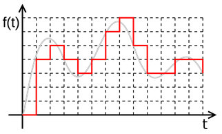
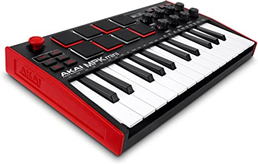
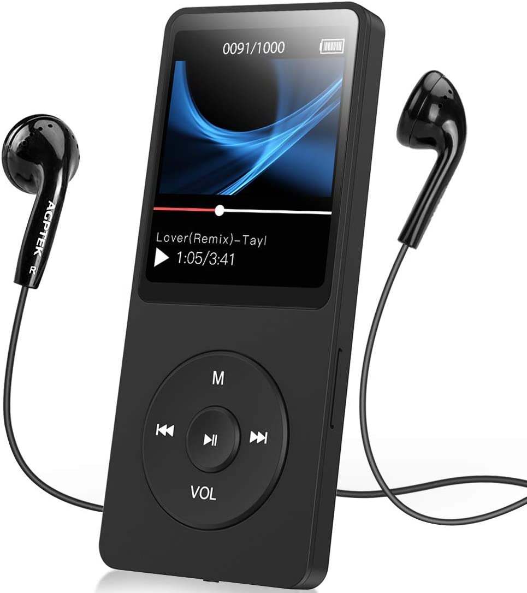

Un suono è un'alterazione della pressione dell'aria che viene percepita dall'orecchio umano o da un microfono. La frequenza di un suono è la velocità con cui si ripetono le onde, e determina la sua altezza o tonalità. La pressione sonora è l'intensità del suono e determina il suo volume. Quando un suono viene registrato, la pressione sonora viene trasformata in un segnale elettrico che può essere registrato e riprodotto. La rappresentazione grafica di un suono mostra la pressione sonora in funzione del tempo.
|
Il suono analogico, come quello registrato da un microfono, deve essere convertito in un segnale digitale per essere memorizzato e riprodotto. Il processo di conversione si chiama campionamento. Durante il campionamento, il segnale analogico viene misurato a intervalli regolari, creando una serie di punti. Per ottenere una qualità del suono simile a quella di un CD, il segnale deve essere campionato a 44100 volte al secondo. Successivamente, il segnale viene quantizzato, ovvero ogni campione viene arrotondato al valore più vicino di una scala discreta di livelli, determinati dal numero di bit utilizzati. |
 |
|
Il MIDI (Musical Instrument Digital Interface) è un formato di file digitale
utilizzato per la registrazione e la riproduzione della musica. Esso codifica
le informazioni su quali note suonare e con quale strumento, ma non include
alcuna registrazione del suono vero e proprio. Per riprodurre un file MIDI,
è necessario utilizzare un sintetizzatore che generi i suoni in base alle
istruzioni del file. Il MIDI è molto efficiente dal punto di vista dello spazio
di archiviazione, ma presenta limitazioni nella riproduzione del suono rispetto
ad altri formati come l'MP3.
|
 |
|
Il formato MP3 è una codifica audio digitale. Utilizza un metodo di compressione
per ridurre le dimensioni del file audio mantenendo una qualità audio accettabile.
La compressione MP3 consente di memorizzare una grande quantità di musica su
dispositivi di archiviazione di piccole dimensioni, come lettori MP3 e smartphone.
MP3 è uno dei formati audio più diffusi al mondo e supportato da quasi tutti i
dispositivi multimediali e software di riproduzione audio. Tuttavia, la compressione
può causare una perdita di qualità audio rispetto all'originale, a seconda del
livello di compressione scelto.
|
 |